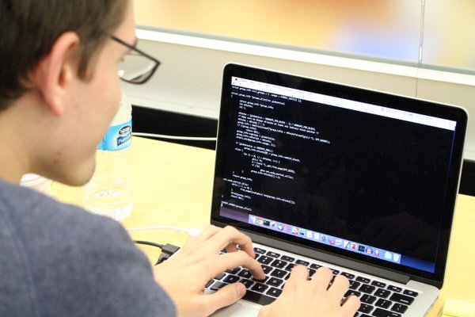
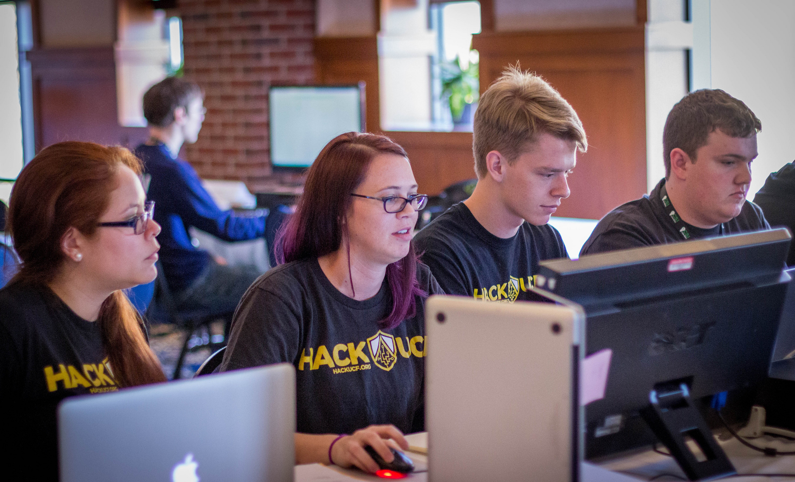
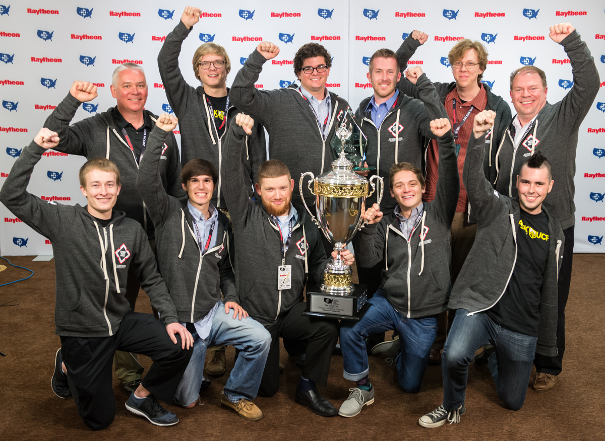

Hone Your Skills
Our workshops will cover all of concepts that you will need to play Capture The Flag. Our dedicated team of workshop leaders will help to guide you through the process of learning everything from the Linux command line to Return Oriented Program and kernel exploitation. We require no prerequisite knowledge to get started, so if you are just getting into security, HackUCF Workshops are the place for you. We also have many members who have been in the security field for years, so we can help to bring even the most enthusiastic CTFers up to the next level. Check out workshops.hackucf.org to get a list of resources, extra practice, and lecture slides from past workshops. To find out when and where workshops are being held. Login into our slack channel with your Knights Email.
Compete in Internatoinal Competitions
While many CTFs are available on-line for anyone to play, many are in-person only. Security professionals and college teams alike come together to compete in these exclusive competitions. Our CTF team has traveled across the United States to compete in international Capture the Flag competitions. We have been everywhere from New york for CSAW Finals at NYU to Seattle Washington for Microsoft's Build The Shield. Besides being all-expenses payed for vacations to play our favorite game against teams from around the world, these competitions provide our members with the opportunity to meet with and learn from experts in the field. The networking opportunities that these competitions can provide you with are incredible.
Profit
Our CTF team doesn't just compete, they win. Our team's success in international CTFs has won our members everything from tablets to thousands of dollars in cash. We won 10th place in CSAW Finals 2015, 1st place in #CSICyberSEED 2015 , and we placed in the top 100 on CTFtime in 2015. What's more, the skills that you will learn in these workshops will take you much further than CTF competitions. The things that we will cover will be directly applicable to the security industry. In fact, Most members who attend workshops regularly and apply themselves get high paying internships during their time at UCF, and then go on to work in the security field for fortune 500 companies.
A Few Of The Companies Our Members Have Gone On To Work For: